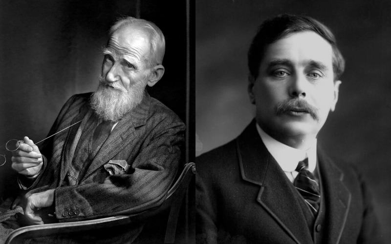
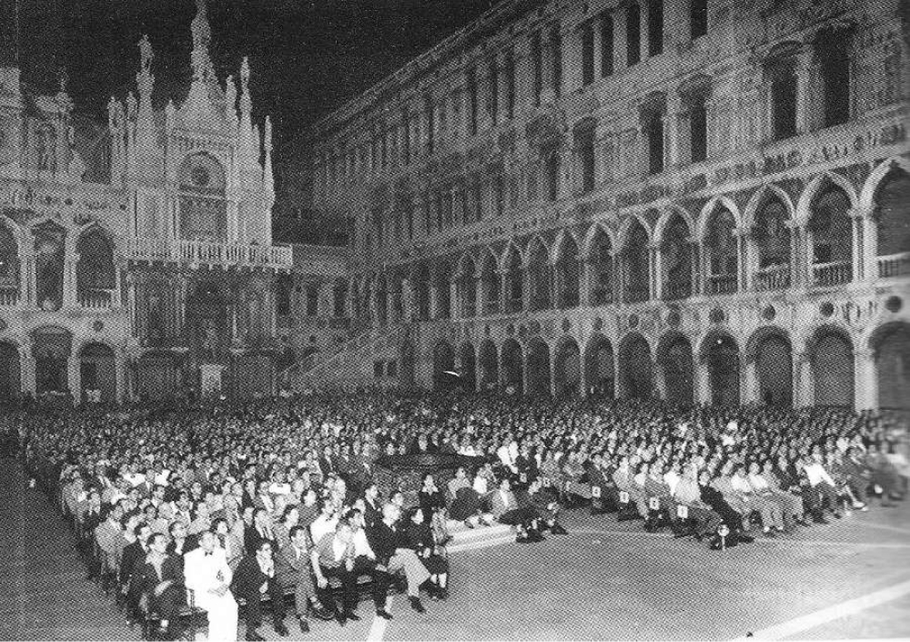
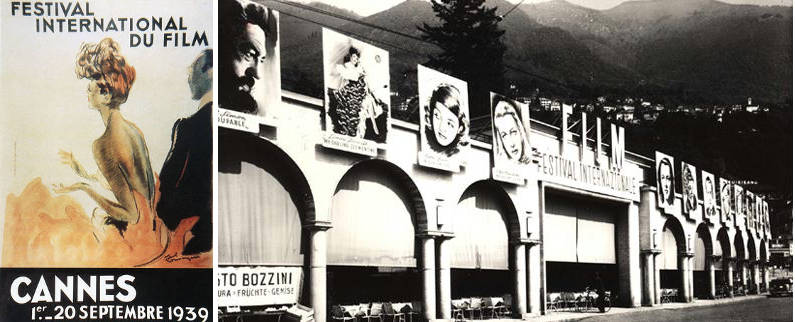

История развития кинофестивалей
Зарождение идеи кинофестивалей
Сегодня во всем мире тысячи фестивалей, которые позволяют режиссёрам представить свою работу зрителям разных стран и культур. Об истории кинофестивалей, а также о том, как они стали неотъемлемой культурной частью многих стран, написано немного. В то время как можно легко найти книги, в которых перечислены основные международные фестивали, никто не говорит о том, как они появились. На начальной стадии развития кино, главным вопросом было как показать новый вид искусства зрителю. Стали появляться кинотеатры и люди потянулись в тёмные залы, чтобы вместе с другими незнакомцами впервые увидеть фильм. Будь то борьба за приз, похороны убитого президента, танцующая балерина, - мир был покорён искусством кино с самого начала. Понадобилось более 30 лет, чтобы на горизонте стали появляться первые кинофестивали. В начале 1930-х годов был учреждён первый кинофестиваль. Но в 1920-х годах в крупных городах Европы, Южной Африки и Северной Америки стали возникать киноклубы и кинематографические общества. Клубы дали возможность режиссёрам и любителям кино показывать свои фильмы, а также делиться впечатлениями и обсуждать новые идеи. Лондонское кинематографическое общество было одним из первых киноклубов. Оно было основано в 1925 году, чтобы представить зрителю фильмы, запрещённые для показа во многих европейских кинотеатрах из-за политического содержания. Во главе с основателями общества писателем Гербертом Джорджем Уэллсом и сценаристом Джорджем Бернардом Шоу в клубе обсуждали кинорежиссуру, а также современные тенденции и проблемы кино. Следующей после кинематографических обществ логической ступенью развития стал показ фильмов как части кураторской программы, в течение нескольких дней.Джордж Бернард Шоу и Джордж Герберт Уэллс
Европа прокладывает путь.
Кинофестивали, такие, какими мы знаем их сегодня, впервые появились в Европе и распространились по всему миру. Первым официальным фестивалем стал Венецианский кинофестиваль, организованный в Италии. Вечером 6 августа 1932 года фильм Доктор Джекил и мистер Хайд режиссера Рубена Мамуляна открыл фестиваль на Лидо как часть 18-ого Венецианского Биеннале Esposizione Internazionale dArte Cinematografica. Венецианское Биеннале было основано в 1895 году как событие, посвященное искусству. Венецианский кинофестиваль состоялся при поддержке бизнесмена и политика графа Джузеппе Вольпи ди Мисурата, который также являлся его председателем и целью его открытия было продвижение итальянского кино и туризма под руководством Биеннале. Впервые на фестивале были представлены фильмы из всех итальянских регионов в одном городе, где люди могли собраться и смотреть их вместе. В программу фестиваля входили такие фильмы как Это случилось однажды ночью режиссера Фрэнка Капра, Франкенштейн Джеймса Уэйла, Земля Александра Довженко, Свободу нам Рене Клера и Чемпион Кинга Видора. Сегодня Биеннале продолжает поддерживать искусство кино, музыку, театр, танец и архитектуру, и является одним из ведущих кинофестивалей мира.Венецианский фестиваль на Палаццо Дукале, 1947 г.
К 30-м и началу 40-х годов в Европе стали появляться и другие фестивали. В 1935 году при поддержке главы СССР
Иосифа Сталина открылся Московский Международный Кинофестиваль в качестве альтернативы Венецианскому, но во
время Второй Мировой Войны он был приостановлен, возобновив деятельность только в 1959 году. С тех пор он проводится ежегодно.
Международный Кинофестиваль во Франции, а, другими словами, всем известный Каннский Фестиваль, был впервые
открыт для публики в сентябре 1939 года.
Первоначально его организовал Луи Люмьер, один из основоположников кино и его публичного показа. Проведение
фестиваля вынуждены были отложить после самого открытия, которое ознаменовалось премьерой Горбун из Нотр-Дама
режиссера Уильяма Дитерле, из-за начавшейся Второй Мировой Войны.
Фестиваль открылся снова только после окончания войны в 1946 году, но не проводился в 1948-м и 1950-м
годах из-за недостатка средств, однако со следующего года и до сих пор проходит регулярно. В 1952 году
его проведение было передвинуто на весенний месяц май по совету Эльзы Максвелл, считавшей, что вместо
проведения фестиваля в сентябре после активного периода летнего туризма его лучше проводить весной, что
даст возможность показывать больше фильмов в это время года перед тем, как они попадут на другие кинофестивали.
Фестиваль быстро стал важным послевоенным культурным событием и до сих пор привлекает основных
представителей кинобизнеса продюсеров, знаменитостей и журналистов из разных стран. На данный
момент он считается самым крупным фестивалем в мире.
Другие значительные кинофестивали, созданные после Второй Мировой войны, которые продолжают свое
существование сегодня, - это кинофестиваль Локарно в городе, расположенном в горах на границе
Швейцарии и Италии, международный фестиваль в Салерно в Италии, а также международный кинофестиваль
в Карловых Варах в Республике Чехия, который был открыт в 1946 году, но не проводился в 1953-м и
1955-м годах соответственно. Несмотря на это, он считается одним из самых старых и уважаемых фестивалей в мире.
Каннский фестиваль и Кинофестиваль в Локарно
Эдинбургский Международный Кинофестиваль в Шотландии, основанный в 1947 году, считается старейшим фестивалем в
мире, который проводился регулярно, без перерывов, обогнав даже Венецианский, так как последний был приостановлен
во время войны с 1943 до 1945 года.
Берлинский Международный Кинофестиваль (или Берлинале), который считается одним из главных фестивалей мира, был
организован в 1951 году по предложению американского офицера Оскара Мартэя, который был направлен на службу в
Берлин в 1948 году, чтобы следить за деятельностью немецких кинорежиссёров послевоенного времени. В 1950 году
на деньги, взятые в долг американской военной администрацией, чтобы организовать фестиваль, Мартэй основал
комитет, состоявший из британского партнёра, членов берлинского сената, и нескольких немецких продюсеров.
Первый фестиваль был открыт фильмом Ребекка Альфреда Хичкока с Джоан Фонтэйн и Лоуренс Оливье в главных ролях.
Мисс Фонтэйн была одной из первых актрис, посетивших фестиваль в качестве специальной гостьи, а Мартэй получил
Золотого медведя за свои достижения.
По мере того, как фестивали стали появляться и в других городах, появилась необходимость их дифференцировать.
1950-е годы принесли с собой волну новых фестивалей во всем мире, так как организаторы поняли, как полезны
подобные мероприятия для киноиндустрии и общества в целом. Например, на кинофестивале Пула в Хорватии
(бывшей Югославии), основанном в 1953 году, показы проходили на открытом воздухе на Арене Веспасиана
(похожей на Колизей в Риме). Сейчас этот фестиваль считается одним из главных фестивалей мира,
проводимых на открытом воздухе, число посетителей которого насчитывает 8000 человек.
Фестивали также начали появляться в Индии, Австралии, Испании, Аргентине, Англии, Ирландии, Канаде
и, наконец, в США примерно в 1957 году.